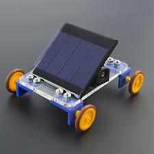

Moon Camp
Este proyecto consiste en el diseño y construcción de un carro robótico alimentado por un panel solar, con el fin de simular cómo podría funcionar un sistema de transporte en la superficie lunar
Leds
En el programa Moon Camp, desarrollé un proyecto basado en un carro robot autónomo diseñado para funcionar en condiciones similares a las de la Luna, utilizando como fuente principal de energía un panel solar.
